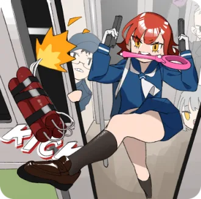

卡牌/手牌官方原文 ↗符卡-福注意：符卡-福仅在场上存在姬梦朝时出现。该卡牌虽然属于专属卡牌，但是在标准对战模式中不仅仅姬梦朝可以获取并使用。 关于该卡牌的获取方式，请查阅对应页面。编号20027类型Effect资料编号20027类型Effect对象Entity英文名Talisman Card - Fortune来源角色卡牌:风水师详解注意：符卡-福仅在场上存在姬梦朝时出现。该卡牌虽然属于专属卡牌，但是在标准对战模式中不仅仅姬梦朝可以获取并使用。 关于该卡牌的获取方式，请查阅对应页面。历史*2026年2月6日 **对文本进行了标准化。 *2025年1月24日 **引入游戏。图片HandCard 20027相关内容姬梦朝角色丧心病狂卡牌/手牌人机交融卡牌/手牌以毒攻毒卡牌/手牌以牙还牙卡牌/手牌传递炸弹卡牌/手牌你有我有卡牌/手牌保护屏障卡牌/手牌